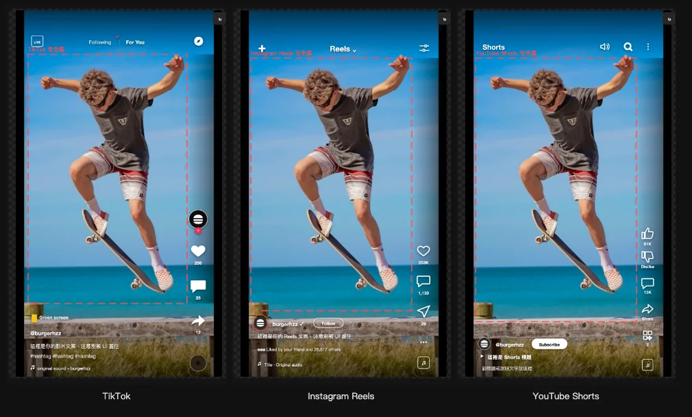

Premiere Pro 擴充
burgerGuide
短影音安全區疊圖

以前怎麼做、卡在哪
短影音的字卡、logo、人臉常常被平台的按鈕和文案蓋住，剪的時候看不出來，發出去才發現。以前的作法有兩種：一種是匯入現成的安全框素材圖，但只有一種版型可以選；另一種是自己手動拉參考線。
它怎麼改善
- 不用另外找素材圖TikTok、Instagram Reels、Facebook Reels、YouTube Shorts 的擬真介面都內建在面板裡，按一下就疊到時間軸最上層。
- 版型可以換四個平台的介面各自獨立，還有一個「三平台都安全」的保守框，另外有橫式 16:9 的 YouTube 介面。
- 不用手拉參考線三分法、中心十字、動作安全框、字幕安全框都可以直接打開。也可以自訂格線，存成自己的預設。
- 一支滑桿調透明度所有疊圖合成一個片段，透明度用一支滑桿就能調。
核心功能
- 四個平台的擬真介面
- 三平台都安全的保守框
- 橫式 16:9 YouTube 介面
- 三分法、中心十字、動作安全框、字幕安全框
- 自訂格線，可存成預設
做的時候想清楚的事
Premiere 沒有讓外掛畫參考線的功能，所以改用疊一層透明圖片來做。代價是輸出前要記得關掉那一軌，不然疊圖會一起被輸出。